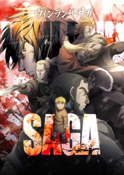
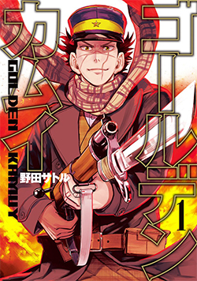
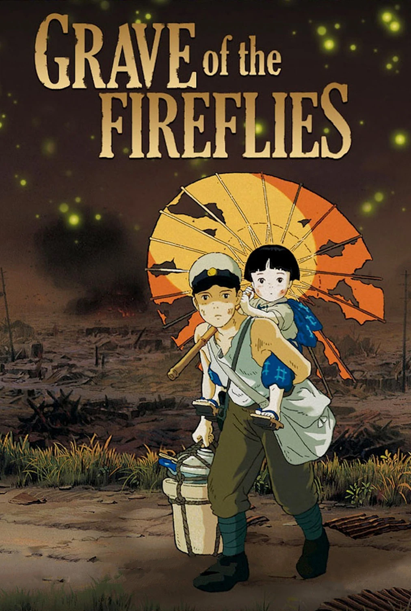
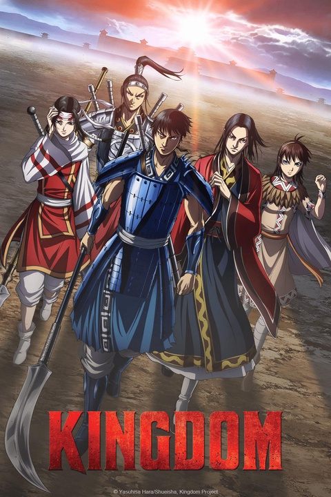
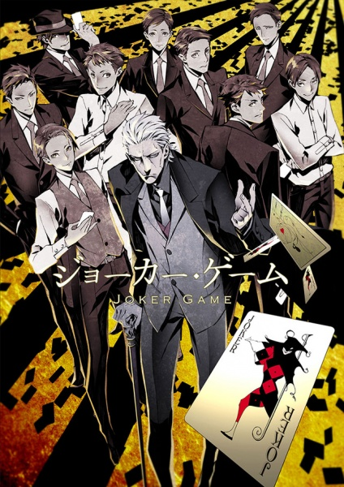
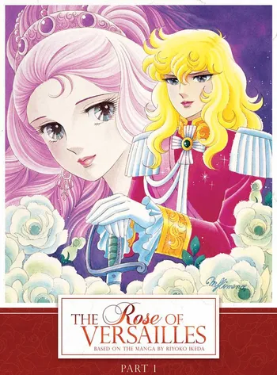
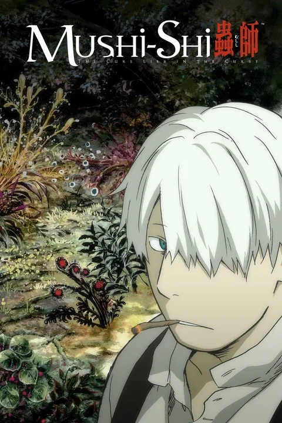
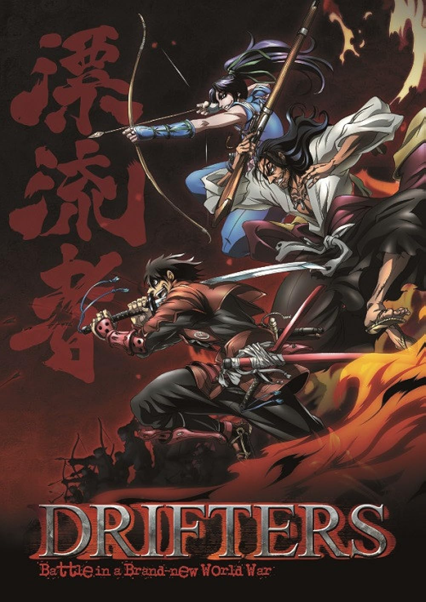

"Rurouni Kenshin," also known as "Samurai X," is a Japanese anime and
manga series set in the Meiji era of Japan. The story follows Kenshin
Himura, a wandering swordsman with a dark past as an assassin during the
Bakumatsu (late Edo) period. Determined to atone for his violent
history, Kenshin wields a reverse-blade sword, vowing never to kill
again. As Kenshin travels, he encounters various individuals who become
his allies and friends. The series explores themes of redemption,
justice, and the impact of violence on individuals and society.
Kenshin's journey is not only a physical one but also a moral and
spiritual quest to find meaning in a time of societal upheaval. "Rurouni
Kenshin" seamlessly combines action, historical elements, and
character-driven storytelling. Kenshin's internal struggles and the
complex relationships he forms with those he meets create a compelling
narrative that has resonated with audiences worldwide. The series is
celebrated for its well-choreographed sword fights, memorable
characters, and its exploration of themes that transcend the historical
setting.
Vinland Saga

"Vinland Saga" is a historical anime and manga series that delves into
the Viking Age, combining elements of action, drama, and political
intrigue. The story follows Thorfinn, a young Viking whose life takes a
dramatic turn after his father is killed by Askeladd, a cunning
mercenary leader. Driven by a desire for revenge, Thorfinn joins
Askeladd's band in the hope of one day challenging him to a duel. The
narrative unfolds against the backdrop of historical events, including
the Danish invasion of England led by King Sweyn Forkbeard and the later
establishment of a settlement in Vinland (North America) by the
legendary explorer Leif Erikson. "Vinland Saga" explores themes of war,
honor, and the consequences of revenge. The series provides a gritty and
realistic portrayal of Viking society, its conflicts, and the personal
struggles of its characters. With intense battle sequences and complex
character development, "Vinland Saga" offers a compelling narrative that
combines historical accuracy with fictional elements to create a
gripping and immersive experience.
Golden Kamuy

"Golden Kamuy" is an anime and manga series set in the aftermath of the
Russo-Japanese War during the early 20th century. The story follows
Saichi Sugimoto, a veteran of the war, who becomes involved in a quest
to find hidden Ainu gold in the wilderness of Hokkaido. The narrative
unfolds as Sugimoto teams up with Asirpa, an Ainu girl with exceptional
survival skills and knowledge of the region. Together, they navigate the
harsh landscape, facing various challenges, including other treasure
hunters, criminals, and the harsh conditions of the northern wilderness.
"Golden Kamuy" seamlessly blends elements of adventure, historical
drama, and cultural exploration. The series explores Ainu culture and
traditions, incorporating them into the larger narrative. With a diverse
cast of characters, intense action sequences, and a plot filled with
twists and turns, "Golden Kamuy" offers a unique and engaging story that
combines treasure hunting with themes of survival, identity, and the
impact of war on individuals and communities.
Grave of the Fireflies

"Grave of the Fireflies" is a profoundly emotional Japanese animated
film directed by Isao Takahata and produced by Studio Ghibli. Released
in 1988, the story is set in Japan during the final months of World War
II and follows the tragic tale of two siblings, Seita and Setsuko. The
film begins with Seita's death and then recounts the events leading up
to it. After their home is destroyed in an air raid, Seita and Setsuko
become orphans and struggle to survive in the midst of the war's
devastation. The siblings face starvation, societal indifference, and
the harsh realities of wartime Japan. "Grave of the Fireflies" is a
poignant exploration of the human cost of war and the resilience of the
human spirit. The fireflies in the title serve as a metaphor for the
fleeting nature of life and the beauty that persists even in the darkest
of times. The film is celebrated for its powerful storytelling,
evocative animation, and its ability to evoke a deep emotional response
from audiences. It is considered a masterpiece in the world of animated
cinema, offering a haunting and reflective portrayal of the impact of
war on civilians, particularly children.
Kingdom

"Kingdom" is a Japanese anime and manga series set against the backdrop
of China's Warring States period, a time of intense conflict and
political turmoil. Created by Yasuhisa Hara, the story follows Xin Li, a
young and ambitious war orphan, as he dreams of becoming a great
general. The narrative unfolds as Xin strives to climb the ranks in the
military and seek recognition for his abilities. Along the way, he
encounters historical figures such as Ying Zheng (later known as Qin Shi
Huang), who would become the first Emperor of China. As Xin and his
allies navigate the complexities of warfare, political intrigue, and
power struggles, the series explores themes of leadership, strategy, and
the impact of war on individuals and nations. "Kingdom" is celebrated
for its epic scale, intense battle scenes, and intricate plot that
weaves together historical events and fictional elements. It provides a
gripping portrayal of the challenges faced by those seeking to unify
China during a tumultuous period in its history. The series has gained
popularity for its compelling characters, strategic depth, and its
ability to blend historical drama with action-packed storytelling.
Joker Game

"Joker Game" is a Japanese anime and novel series set in the prelude to
World War II. Created by Koji Yanagi, the story revolves around the
D-Agency, an espionage organization established by the Japanese
government. The agency's purpose is to conduct intelligence operations
and espionage activities to secure national interests. The series adopts
an episodic format, with each episode featuring a different spy and
mission. The narratives often involve complex political situations,
international intrigue, and the moral dilemmas faced by the spies as
they carry out their assignments. The characters in "Joker Game" are
skilled operatives with diverse backgrounds and approaches to espionage.
"Joker Game" explores themes of loyalty, deception, and the blurred
lines between right and wrong in the world of intelligence gathering.
The series provides a nuanced portrayal of the challenges faced by spies
and the impact of their actions on both individuals and nations during a
tumultuous period in history. Known for its stylish animation,
suspenseful storytelling, and historical accuracy, "Joker Game" offers a
unique take on the spy genre, providing a glimpse into the world of
covert operations in the years leading up to World War II.
Rose of Versailles

"Rose of Versailles" (Berusaiyu no Bara) is a classic Japanese manga and
anime series created by Riyoko Ikeda. Set in 18th-century France, the
story follows Oscar François de Jarjayes, a young woman raised as a man
by her father to serve as the leader of the Palace Guards. Oscar is a
skilled swordswoman and loyal to Queen Marie Antoinette. The narrative
explores the intricate political and social landscape of
pre-revolutionary France, addressing themes of class disparity, gender
roles, and the impending French Revolution. Oscar's life becomes
entwined with historical events and figures, including the ill-fated
Queen Marie Antoinette and the tumultuous political climate leading to
the French Revolution. "Rose of Versailles" is celebrated for its
engaging storytelling, complex characters, and its unique blend of
historical drama, romance, and political intrigue. It has been praised
for its exploration of societal norms and the impact of historical
events on individuals. The series is considered a landmark work in the
shoujo genre and has left a lasting legacy in the world of anime and
manga.
Mushishi

"Mushishi" is a Japanese anime and manga series created by Yuki
Urushibara. The story is set in an ancient Japan-inspired world and
follows Ginko, a Mushi Master, as he travels through various rural
landscapes investigating and dealing with mysterious creatures known as
Mushi. Mushi are ethereal and primitive organisms that exist in the
natural world, often affecting the lives of humans in both positive and
negative ways. Ginko, with his expertise in Mushi, helps individuals
understand and cope with the supernatural occurrences caused by these
beings. The series is episodic, with each episode focusing on a
different encounter between Ginko and the people affected by Mushi.
"Mushishi" explores themes of nature, spirituality, and the delicate
balance between humanity and the unseen forces of the natural world. It
is known for its tranquil atmosphere, beautiful animation, and
contemplative storytelling. The episodic nature of "Mushishi" allows for
a rich variety of narratives, each showcasing the delicate and often
philosophical interactions between humans and the mystical creatures
known as Mushi. The series has received critical acclaim for its unique
approach to storytelling and its ability to evoke a sense of wonder and
introspection.
Drifters

"Drifters" is a Japanese anime and manga series created by Kouta Hirano.
The story revolves around historical warriors, leaders, and figures who
are plucked from their respective timelines at the moment of their
deaths and transported to a mysterious fantasy world. In this new realm,
known as the Ends, these characters are divided into two factions: the
Drifters, who aim to protect the world, and the Ends, who seek its
destruction. The central character, Shimazu Toyohisa, a samurai from the
Battle of Sekigahara, becomes a leader among the Drifters. Together with
other historical figures like Oda Nobunaga and Yoichi Suketaka Nasu,
they form an alliance to combat the Ends, led by the enigmatic figure
known as the Black King. "Drifters" combines historical elements with
fantasy, featuring intense battles, strategic warfare, and the clash of
personalities from different eras. The series explores themes of
leadership, morality, and the consequences of war. Its unique premise,
dynamic action sequences, and the interplay between historical
characters make "Drifters" an engaging and visually striking anime and
manga series.
The Tale of the Princess Kaguya
"The Tale of the Princess Kaguya" ("Kaguya-hime no Monogatari") is a
Japanese animated fantasy film directed by Isao Takahata and produced by
Studio Ghibli. Released in 2013, the film is based on the ancient
Japanese folk tale "The Tale of the Bamboo Cutter" ("The Tale of
Princess Kaguya"). The story follows a humble bamboo cutter who
discovers a tiny princess inside a bamboo shoot. As the princess rapidly
grows into a radiant young woman, she is named Kaguya-hime. The bamboo
cutter, believing her to be of divine origin, raises Kaguya-hime in the
countryside. However, as suitors come from far and wide to seek her hand
in marriage, Kaguya-hime sets them impossible tasks, and her mysterious
celestial origins begin to unfold. "The Tale of the Princess Kaguya" is
renowned for its unique visual style, resembling traditional Japanese
ink paintings. The film explores themes of nature, identity, and the
fleeting nature of life, offering a profound and visually stunning
cinematic experience. It received critical acclaim for its artistry,
storytelling, and emotional resonance, contributing to Studio Ghibli's
legacy of producing thought-provoking and visually captivating animated
films.
.jpg)